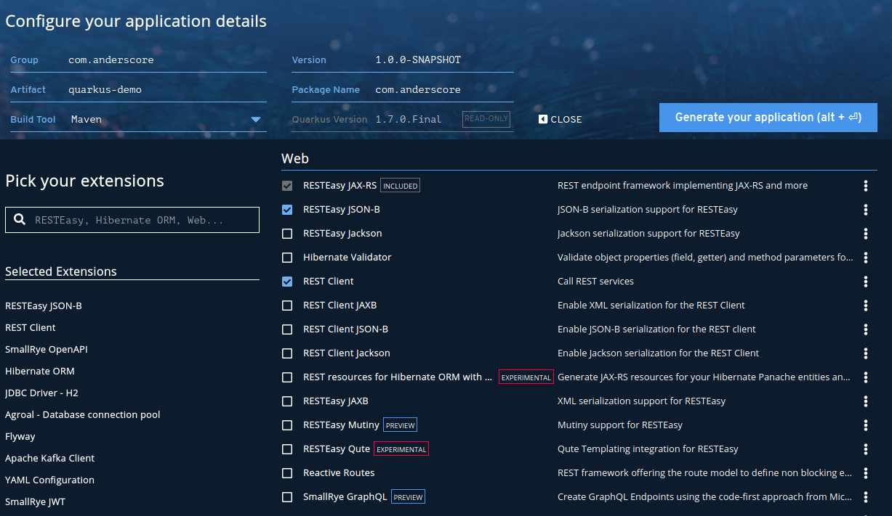

Java/Kotlin/Scala App Framework
JakartaEE + MicroProfile
OpenJDK/HotSpot und GraalVM
Entwickelt von Red Hat
Nachfolger von Thorntail
Konkurrent von Spring Boot
Einführung
Was ist Quarkus?

Quarkus Releases
Datum | Version | Neuigkeit |
12/2018 | 0.0.1 | Erster Github Tag |
11/2019 | 1.0 | Erstes Release |
06/2020 | 1.5 | fast-jar packaging format, Picocli, gRPC, GraphQL |
12/2020 | 1.10 | JSON as default, Multiple reactive datasources, new Micrometer registries |
01/2021 | 1.11 | RESTEasy Reactive, Dev UI |
02/2021 | 1.12 | Fast jar as default, Multipart support for RESTEasy |
03/2021 | 1.13 | DevService, Kubernetes Service Binding, OpenTelemetry |
06/2021 | 2.0 | Vert.x 4, MicroProfile 4, Continuous Testing |
07/2021 | 2.1 | Dev Service for Keycloak, Reactive SQL, Server extension, Kotlin 1.5 |
08/2021 | 2.2 | GrallVM 21.2, MongoDB service binding, Narayana LRA |
10/2021 | 2.3 | Dev Service for Neo4J, Logging with Panache, Testing CLI applications |
Introducing Quarkus: A next-generation Kubernetes native Java framework
Philosophie
Cloud Native, Container First
Imperative und reaktive Programmierung
Erweiterbarkeit
"Freude für Entwickler"
Extensions
Integration von Libraries und Frameworks
Maven Dependencies
Versionen
Konfigurationen
Optimiert für Quarkus (HotSpot / SubstrateVM)
Vergleichbar mit Spring Boot Startern
mvn quarkus:list-extensionsQuarkus Extensions
Bootstrapping

Guide: Getting started
System-Voraussetzungen
JDK 11+, Optional: GraalVM (JDK 8 ist deprecated)
Apache Maven, Alternativ: Gradle
IDE Unterstützung
Eclipse: JBoss Tools (https://tools.jboss.org) & Code Ready Studio (Redhat Support)
IntelliJ
Quarkus Tools: https://plugins.jetbrains.com/plugin/13234-quarkus-tools
Quarkus Run Configs: https://plugins.jetbrains.com/plugin/14242-quarkus-run-configs
Quarkus (Ultimate Edition): https://www.jetbrains.com/help/idea/quarkus.html
Microsoft Visual Studio Code: Quarkus Tools (https://marketplace.visualstudio.com/items?itemName=redhat.vscode-quarkus)
Die Beispiele verwenden IntelliJ + Quarkus Tools + Quarkus Run Configs. Sie sind jedoch frei in der Wahl Ihrer IDE.
Guide: Getting started
Hello Quarkus: "2. Architecture"

Guide: Getting started
Hello Quarkus
Projekt generieren
$ mvn io.quarkus:quarkus-maven-plugin:1.10.5.Final:create \
-DprojectGroupId=net.gfu.quarkus \
-DprojectArtifactId=hello \
-DclassName="net.gfu.quarkus.hello.HelloResource" \
-Dpath="/hello"In Verzeichnis wechseln und Server starten
$ cd hello
$ ./mvnw compile quarkus:devServer testen
$ curl -w "\n" http://localhost:8080/hello
helloGuide: Getting started
Artefakte
src/main/docker
Dockerfile.jvm - Container mit OpenJDK
Dockerfile.fast-jar - fast-jar-Variante, Container mit OpenJDK
Dockerfile.native - Container mit ahead-of-time-compilation native image (GraalVM)
src/main/java/net.gfu.quarkus.hello.HelloResource.java - Java Implementation
src/main/resources/META-INF
application.properties - Zentrale Konfiguration
resources/index.html - Freundliche Index-Seite
src/test/java/net.gfu.quarkus.hello
HelloResourceTest - Einfacher Integrationstest (REST-assured)
NativeHelloResourceIT - Integrationstest im ahead-of-time-compilation Setup
pom.xml - Maven Konfiguration - Quarkus Version z.T. abweichend vom ArcheType
Guide: Getting started - Projekt erweitern
Business Service definieren und injizieren (CDI)
HelloService.java
import javax.enterprise.context.ApplicationScoped;
@ApplicationScoped
public class HelloService {
public String greeting(String name) {
return "hello " + name;
}
}HelloResource.java (ergänzen)
// Neue Imports
import javax.inject.Inject;
import javax.ws.rs.PathParam;
// Klasse um Attribut *service* und Methode *greeting* wie folgt ergänzen
@Inject HelloService service;
@GET @Path("/hello/{name}")
@Produces(MediaType.TEXT_PLAIN)
public String greeting(@PathParam("name") String name) {
return service.greeting(name);
}
// HelloResource: Weitere Attribute und MethodenGuide: Getting started - Projekt erweitern
Erweitertes Projekt testen
Shell #1
$ ./mvnw compile quarkus:dev
# ... Weitere Maven Ausgaben
Listening for transport dt_socket at address: 5005
__ ____ __ _____ ___ __ ____ ______
--/ __ \/ / / / _ | / _ \/ //_/ / / / __/
-/ /_/ / /_/ / __ |/ , _/ ,< / /_/ /\ \
--\___\_\____/_/ |_/_/|_/_/|_|\____/___/
2020-10-12 18:15:46,445 INFO [io.quarkus] (Quarkus Main Thread) hello 1.0-SNAPSHOT on JVM (powered by Quarkus 1.10) started in 1.219s. Listening on: http://0.0.0.0:8080
2020-10-12 18:15:46,458 INFO [io.quarkus] (Quarkus Main Thread) Profile dev activated. Live Coding activated.
2020-10-12 18:15:46,458 INFO [io.quarkus] (Quarkus Main Thread) Installed features: [cdi, resteasy]Shell #2
$ curl -w "\n" http://localhost:8080/hello/GfU
hello GfUKafka: Einbindung & Zugriff in Kafka
Vorbereitung
<dependency>
<groupId>io.quarkus</groupId>
<artifactId>quarkus-smallrye-reactive-messaging-kafka</artifactId>
</dependency># Configure the SmallRye Kafka connector
kafka.bootstrap.servers=<kafka-server>:9092
# Configure the Kafka sink (we write to it)
mp.messaging.outgoing.generated-price.connector=smallrye-kafka
mp.messaging.outgoing.generated-price.topic=prices
mp.messaging.outgoing.generated-price.value.serializer=org.apache.kafka.common.serialization.IntegerSerializer
# Configure the Kafka source (we read from it)
mp.messaging.incoming.prices.connector=smallrye-kafka
mp.messaging.incoming.prices.value.deserializer=org.apache.kafka.common.serialization.IntegerDeserializerKafka: Zugriff in Java
Consumer
@ApplicationScoped
public class PriceGenerator {
@Incoming("prices")
public CompletionStage<Void> consume(Message<Integer> price) { return price.ack(); }
// Alternativ
@Incoming("prices")
public void consume(int price) { /* process your price. */ }
}Producer
public class KafkaPriceProducer {
@Outgoing("prices")
public Multi<Message<Integer>> generate() {
return Multi.createFrom().ticks().every(Duration.ofSeconds(1)).map(x -> 4711);
}
// Alternativ
@Outgoing("prices")
public Multi<Integer> generate() {
return Multi.createFrom().ticks().every(Duration.ofSeconds(1)).map(x -> Message.of(random.nextDouble()));;
}
}JSON-Payload
POJO
public class Fruit {
public String name;
public int price;
public Fruit() { }
public Fruit(String name, int price) { this.name = name; this.price = price;}
}Deserializer
public class FruitDeserializer extends JsonbDeserializer<Fruit> {
public FruitDeserializer(){
super(Fruit.class);
}
}mp.messaging.incoming.fruit-in.connector=smallrye-kafka
mp.messaging.incoming.fruit-in.topic=fruit-in
mp.messaging.incoming.fruit-in.value.deserializer=com.acme.fruit.jsonb.FruitDeserializer
mp.messaging.outgoing.fruit-out.connector=smallrye-kafka
mp.messaging.outgoing.fruit-out.topic=fruit-out
mp.messaging.outgoing.fruit-out.value.serializer=io.quarkus.kafka.client.serialization.JsonbSerializerlesson08-kafka
Aufgabenstellung
Legen Sie die Topics order-v1-incoming und order-v1-delivery auf Ihrem lokalen Kafka Broker an.
Zur Integration in das Franchise soll der Pizza-Service Aufträge danach per Kafka in JSON abwickeln:
order-v1-incomingwird konsumiert. Hier gehen Bestellungen ein.order-v1-deliverywird produziert. Hier gehen Bestellungen an die LieferabteilungEine Bestellung ist lieferbereit, wenn per REST der Status auf
IN_DELIVERYgesetzt wird
lesson08-kafka
Hinweise
Ein Skelett liegt in lesson08-kafka. Eine Beispiellösung liegt im Ordner
solutions/lesson08-kafka.Ein einzelner Kafka Broker sowie ein Topic ohne Partitionierung und Replizierung ist ausreichend.